10. Multi-Agent Orchestration (Finalen)
Nu är vi framme vid finalen! Vi ska sluta cirkeln och visa hur agenter kan samarbeta.
Vi ska bygga ett scenario där:
-
Din huvudagent tar emot ett viktigt mejl (beställningar och felanmälan).
-
Istället för att hantera det själv delegerar den uppgiften till en Specialist (en dedikerad Underordnad agent).
-
Specialisten analyserar mejlet och skickar en notis i Microsoft Teams.
10.1 Skapa e-post-triggern (Lyssnaren)
Först måste agenten få en ny utlösare som lyssnar på inkommande mejl.
- Gå till fliken Översikt och sektionen Utlösare.
-
Klicka + Lägg till utlösare.
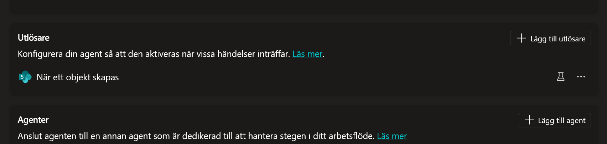
-
Sök efter och välj:
När ett nytt e-postmeddelande tas emot -
Klicka på När ett nytt e-postmeddelande tas emot (V3) och därefter på Nästa.

-
Kontrollera att anslutningen är grön (Ansluten) och klicka på Nästa.

-
Konfigurera utlösaren: Idealiskt sett vill man kanske inte att agenten ska vakna av alla olika mejl, men i denna labb vill vi se agentens förmåga att filtrera och plocka upp relevanta mejl utan fördefinierade filter. Tanken är att denna ska agera som företagets centrala IT support. Därför konfigurerar vi den på följande vis:
- Mapp: Klicka på mapp-ikonen och välj Inkorg.
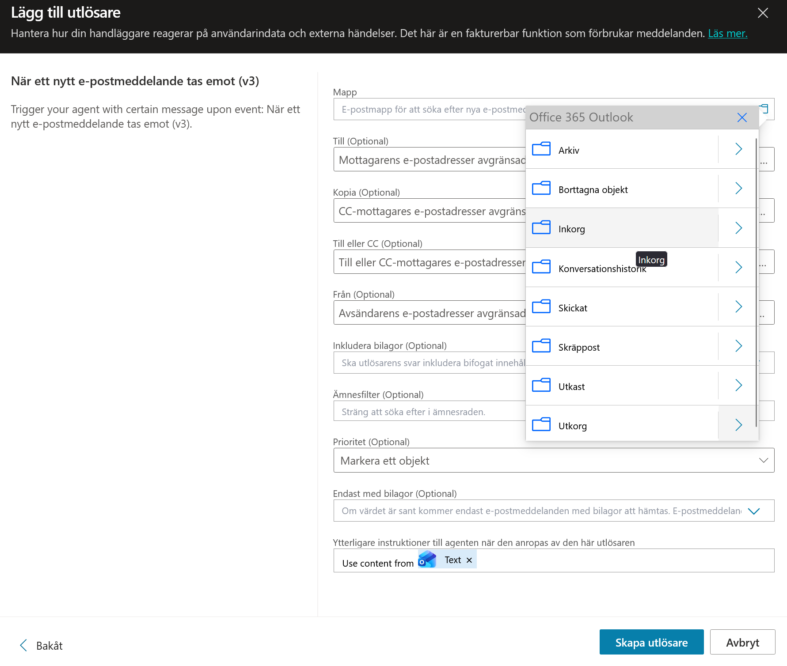
- Vikt: Låt resterande vara oförändrade och klicka på Skapa utlösare.
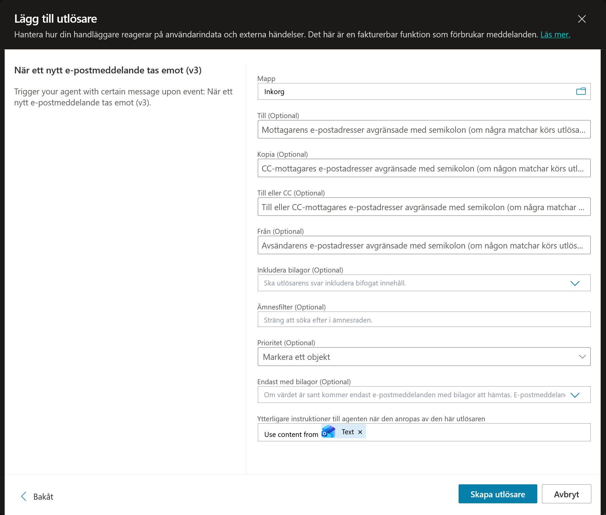
10.2 Skapa Teams-verktyget (Underordnad agent)
Nu vet vi att vår huvudagent lyssnar och tar emot inkommande mejl. För att göra huvudagenten smart och effektiv kommer vi delegera analysen av dessa mejl till en så kallad Underordnad agent.
-
Stäng Dags att testa din utlösare! vilket leder tillbaka till agentens Översikt.
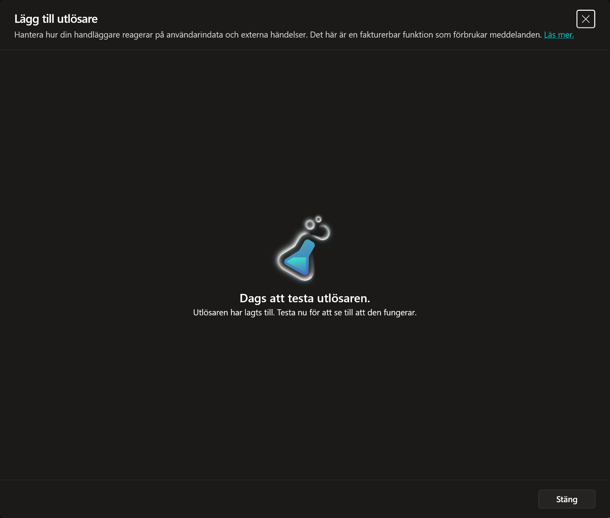
-
Scrolla ner till Agenter-delen i Översikt och klicka på + Lägg till agent.
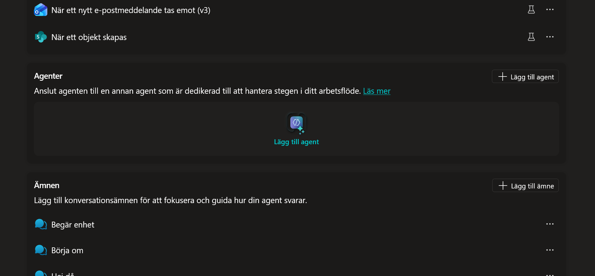
-
Rutan Välj hur du vill utöka din agent dyker upp.
- Här ser vi alternativet Skapa en underordnad agent.
-
Notera: Eftersom vi i början gjorde en dedikerad Lösning ser vi att inga andra agenter är valbara, eftersom de tillhör en annan miljö.
-
Klicka på Ny underordnad agent.
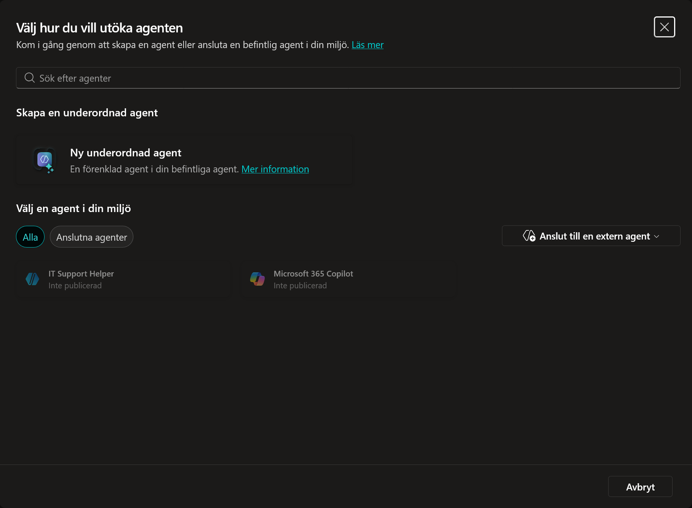
-
Namn: Döp agenten till:
E-post agent -
När ska den här användas: Låt vara som standard (dvs Agenten väljer baserat på beskrivning). Detta är viktigt för orkestreringen.
-
Beskrivning: Det här är avgörande. Det är denna text som huvudagenten läser för att förstå när den ska lämna över jobbet. Skriv:
Använd denna agent för att hantera och analysera inkommande e-postmeddelanden som rör beställningar eller supportärenden. Denna agent kan analysera innehållet och notifiera via Teams.- Klicka sedan på Spara uppe i högra hörnet.
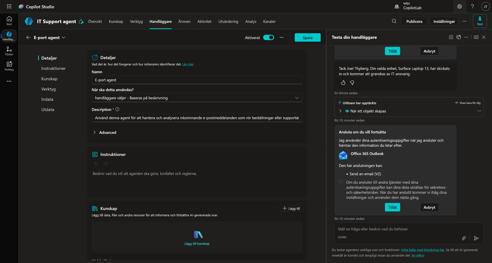
10.3 Lägg till Teams-verktyg
För att agenten ska kunna utföra punkt 3 i sina instruktioner måste den ha ett verktyg.
-
Gå till delen Verktyg inne i din underordnade agent och klicka på + Lägg till.
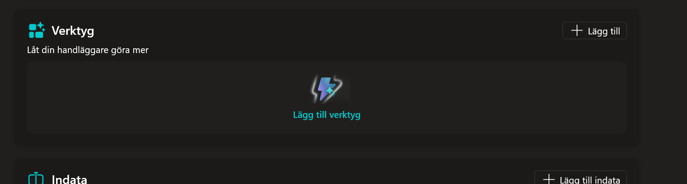
-
Sök efter:
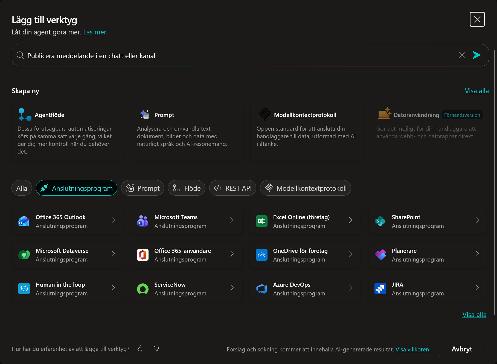Publicera ett meddelande i en chatt eller kanal -
Välj Publicera ett meddelande i en chatt eller kanal genom att klicka på den.

-
Kontrollera anslutningen och klicka Lägg till och konfigurera.
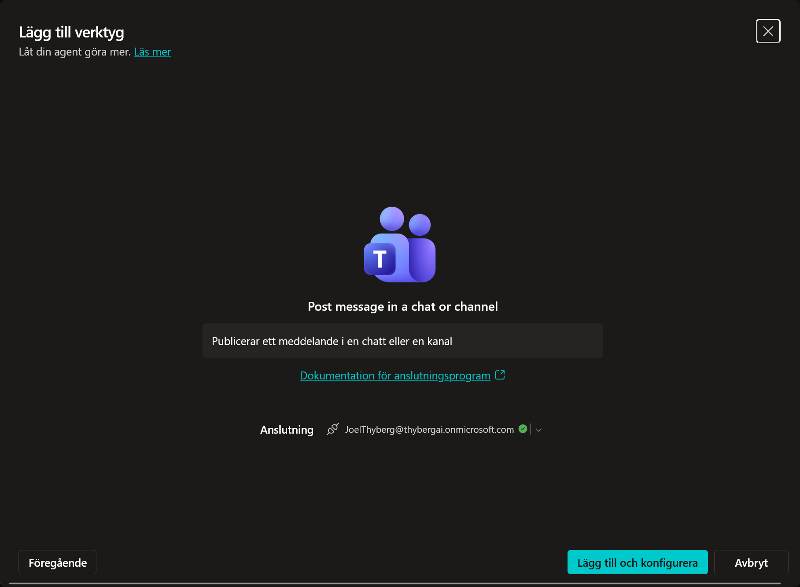
-
Konfigurera verktyget:
- Namn:
Meddela IT-teamet - Beskrivning:
Skickar ett meddelande till IT-supportens Teams-chatt med information från mejlet.
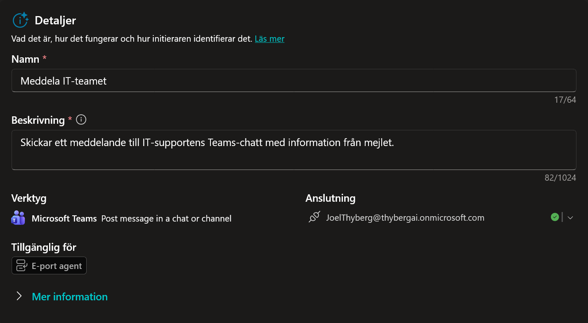
- Namn:
-
Konfigurera indata: Vi vill göra det enkelt och säkert att detta fungerar.
- Klicka på Fyll i dynamiskt med AI bredvid Publicera som och välj Anpassat värde.
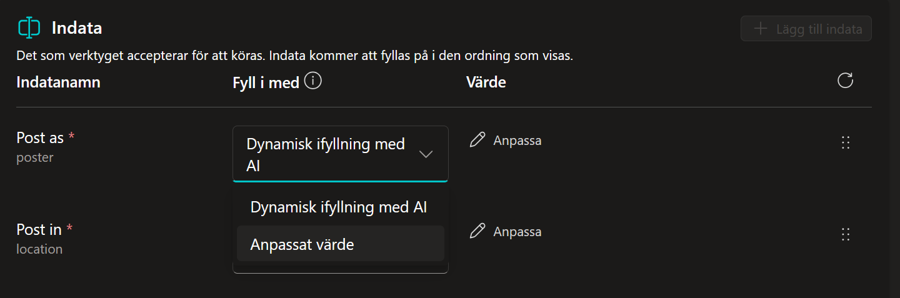
- Klicka på Välj ett alternativ och välj Flow bot.
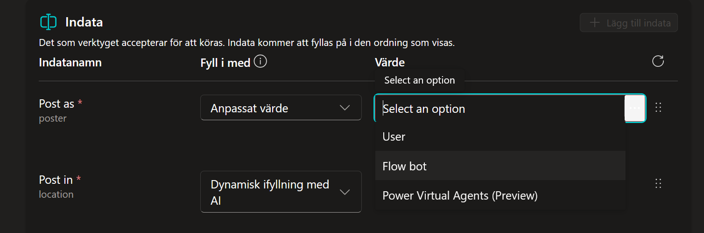
- Klicka på Fyll i dynamiskt med AI bredvid Publicera i och välj Anpassat värde.

- Klicka på Välj ett alternativ och välj Chatta med Flow bot.
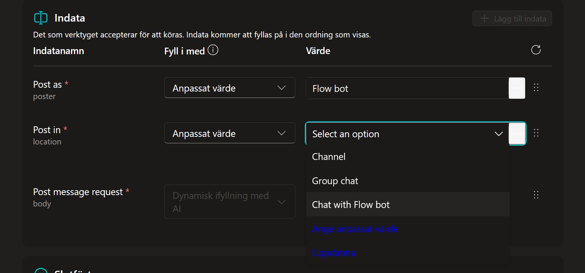
- Notera att en ny indata dyker upp: Mottagare. Välj även här att klicka på Fyll i dynamiskt med AI och sedan Anpassat värde.
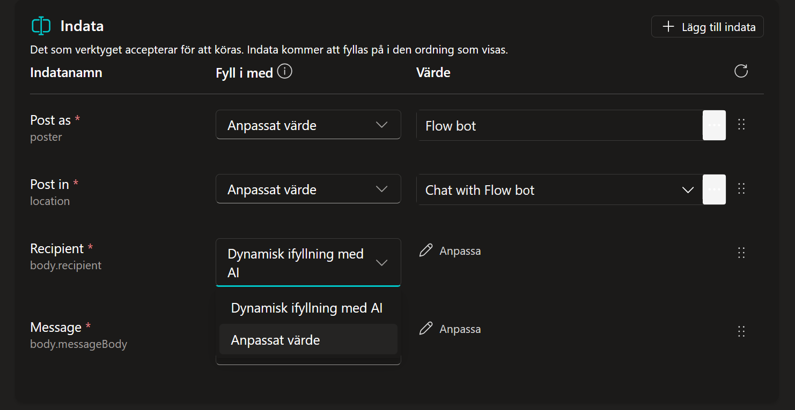
- Skriv in din e-postadress i fältet.
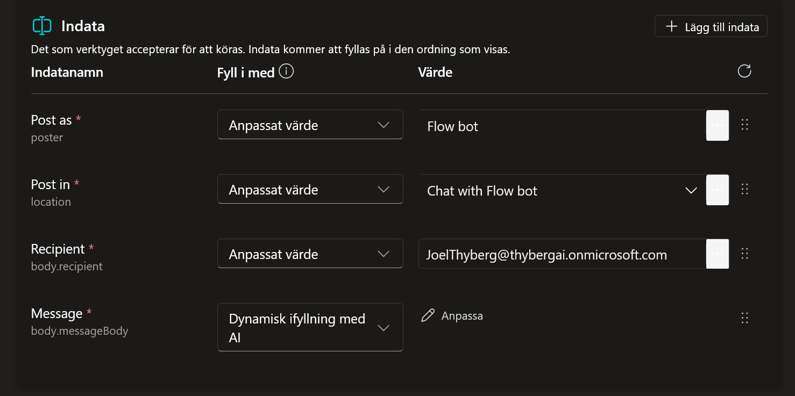
- För Meddelande, låt stå kvar på Fyll i dynamiskt med AI men välj att klicka på Anpassa.
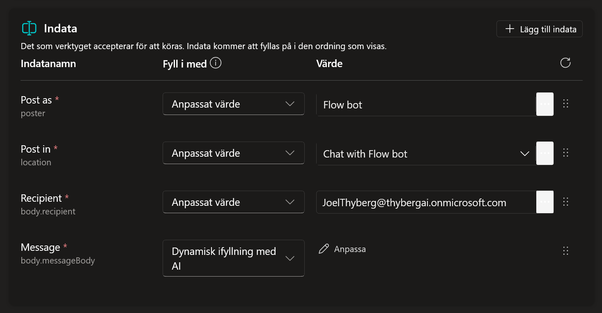
-
I rutan Beskrivning för Meddelande, skriv in följande:
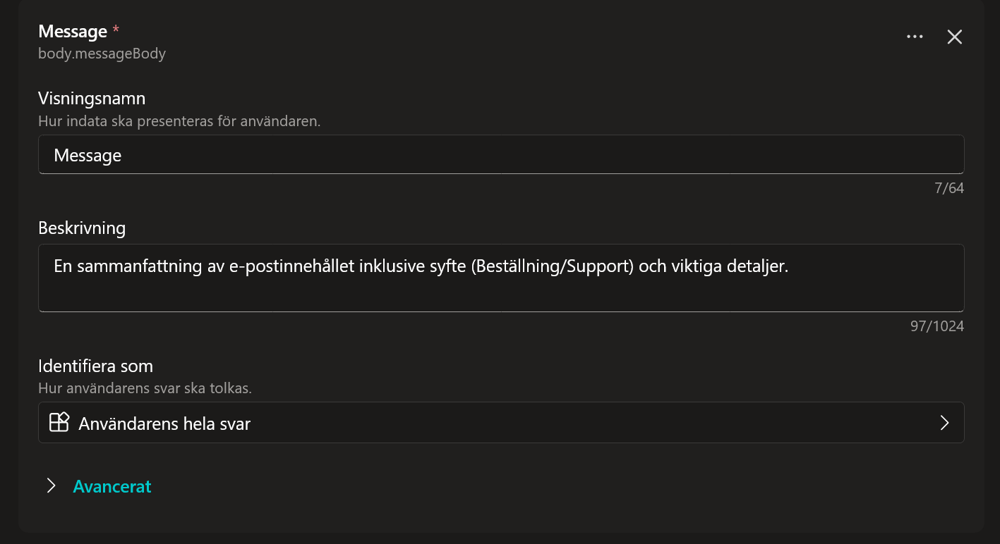En sammanfattning av e-postinnehållet inklusive syfte (Beställning/Support) och viktiga detaljer. -
Stäng panelen för Meddelande.
-
Klicka Spara.
10.4 Konfigurera den underordnade agenten
Nu har vi skapat skalet för agenten samt ett verktyg. Nu ska vi ge den instruktioner så den förstår vem den är och vad den ska och kan göra.
-
Klicka på <- Meddela IT-teamet.
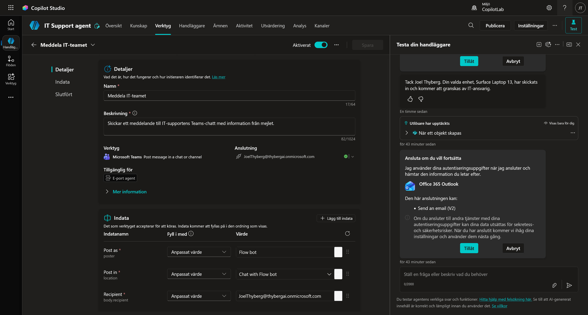
-
Ge instruktioner: Hitta rutan för Instruktioner och klicka i den.
Klistra in följande instruktioner som talar om hur den ska bete sig:
Du är en Email Triage Specialist. Din uppgift är att analysera innehållet i inkommande mejl som skickas till dig från huvudagenten. 1. Identifiera vilken typ av ärende det gäller (Ny beställning eller Supportärende). 2. Extrahera viktig information: - Om det är en beställning: Vilken modell och vem som beställer. - Om det är support: Vad felet är. 3. Använd verktyget /Meddela IT-teamet för att skicka en sammanfattning till Teams-chatten.- Ställ dig direkt efter
/Meddela IT-teametoch välj Meddela IT-teamet verktyget genom att klicka på popupmenyn.
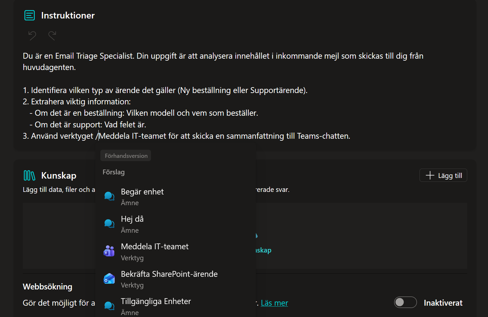
- Klicka på Spara.
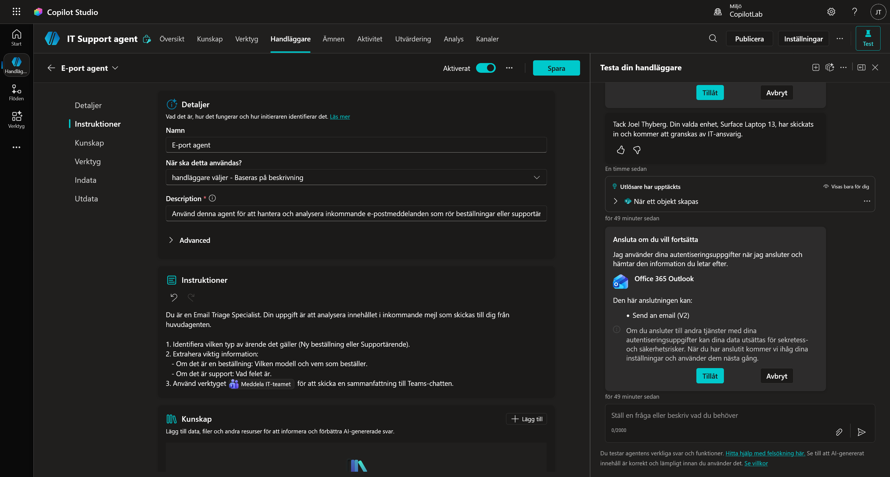
- Ställ dig direkt efter
10.5 Uppdatera huvudagenten
Nu är all logik för den underordnade agenten klar. Vi ska nu uppdatera huvudagenten så att den förstår att den ska delegera jobbet.
-
Navigera tillbaka till huvudagentens Översikt.
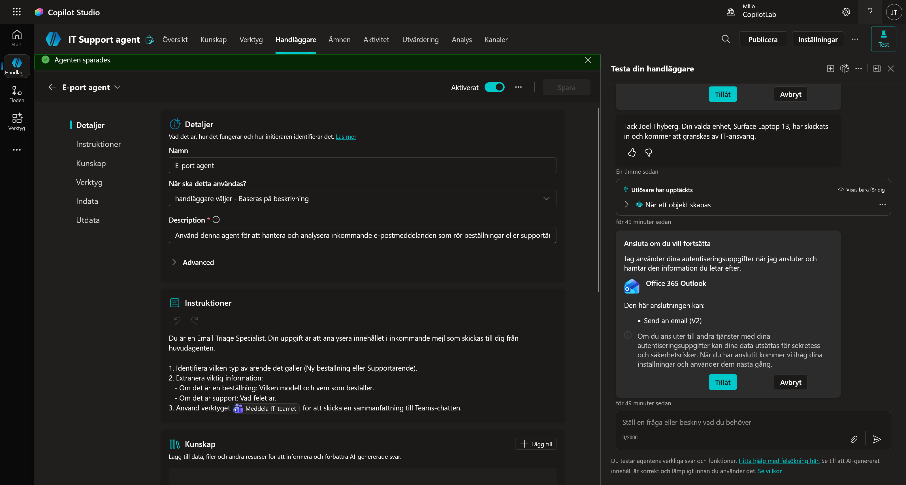
-
Gå ner till Instruktioner och klicka på Redigera.

-
Lägg till följande instruktioner i slutet:
- För inkommande mejl, delegera vidare direkt till /E-post agent och skicka med all information. -
Skapa länkningen (Viktigt): Texten du nyss klistrade in är bara vanlig text. Vi måste göra om namnet till en aktiv länk så att AI:n förstår att vi menar objektet.
- Ställ dig precis bakom
/E-post agenti texten du nyss skrev. - Klicka på E-post agent i popupmenyn.

- Ställ dig precis bakom
-
Klicka på Spara.

10.6 The Grand Finale (Testa alltihop)
Nu knyter vi ihop säcken. Vi ska simulera hela kedjan: Beställning -> Mejl -> Utlösare -> Huvudagent -> Underordnad agent -> Teams.
-
Testa enhetsförfrågan
- Klicka på Testa i högra hörnet om testpanelen inte redan är uppe.
- Om det redan ligger en chatt där, klicka på Starta ny session.
- Skriv:
Hej jag behöver en ny bärbar dator - Välj Standard (Office/Admin) varianten.
- Skriv:
Ja, tack! - Välj ett av alternativen, exempelvis Surface Laptop 13, men lämna rutan för ytterligare information tom.
- Klicka Skicka.
- Invänta svaret. Öppna därefter din inkorg för att se nästa Enhetsförfrågan-mejlet.
-
Testa felanmälan
- Gå in i SharePoint.
- Klicka på Lägg till nytt objekt.
- Under Ärende skriv in:
Wi-Fi problem - För Ärendebeskrivning skriv:
Kan inte logga in på Wi-Fi för tillfället. - Sätt Prioritet till High.
-
Testa dina utlösare
- Gå tillbaka till Copilot Studio och till Översikt.
- Klicka på Testa utlösare bredvid När ett objekt skapas.
- Välj den senaste posten och klicka Starta testning.
- Kolla din inkorg igen. Förhoppningsvis ligger nya Ny supportbegäran-mejlet där.
-
Testa den underordnade agenten
- Gå tillbaka till Översikt.
- Klicka nu på Testa utlösare bredvid När ett nytt e-postmeddelande tas emot (V3).
- Förhoppningsvis ser vi två valmöjliga poster nu. Den äldsta borde vara mejlet angående ny enhetsbegäran och den nyare borde vara gällande ny supportbegäran.
- Börja med att klicka på den äldsta och klicka Starta testning.
- Öppna Teams och se om du har ett nytt meddelande under Chattar från Workflows. Om du ser detta fungerar systemet end to end.
- Gå tillbaka till Översikt och klicka nu igen på Testa utlösare bredvid När ett nytt e-postmeddelande tas emot (V3), men välj nu det senaste mejlet.
- Öppna Teams igen och se nu om du fått ett nytt meddelande i samma chatt men nu gällande nytt supportärende.
MISSION COMPLETE
Grattis! Du har nu byggt en Multi-Agent lösning med: * Autonomi: Agenten lyssnar och agerar självständigt. * Orkestrering: Huvudagenten delegerar till specialister. * Integration: Hela flödet knyter ihop SharePoint, Outlook och Teams.